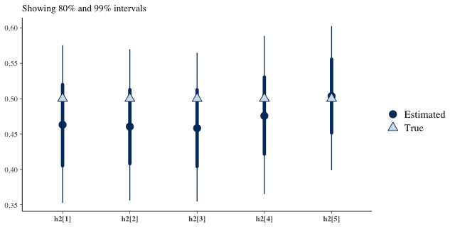
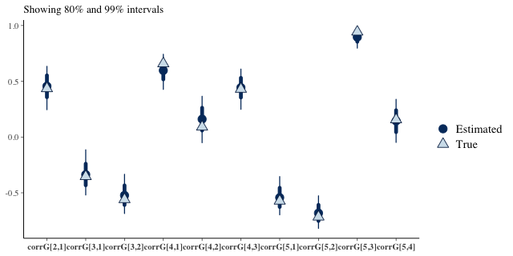
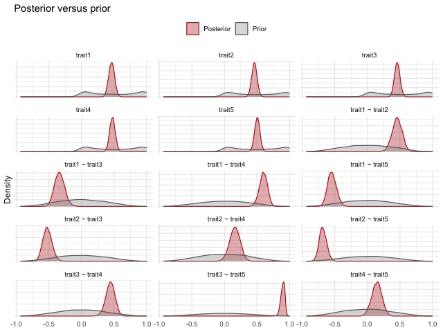
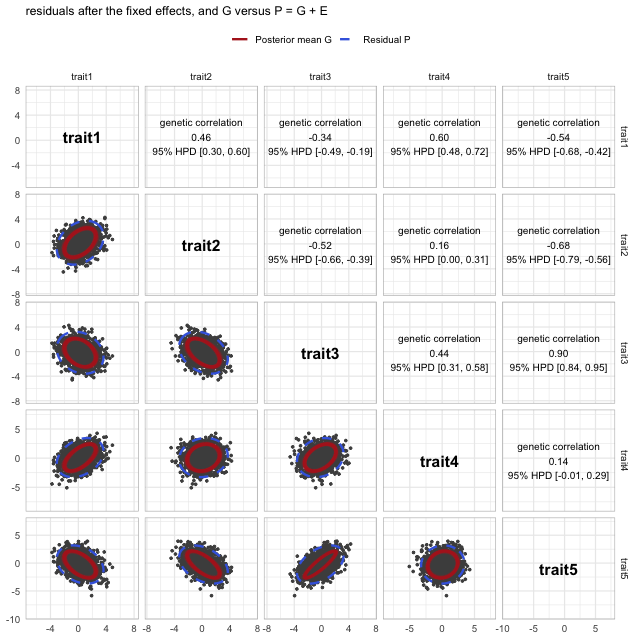
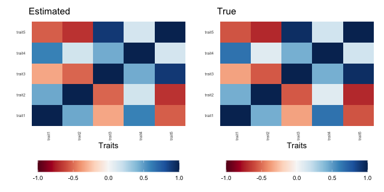
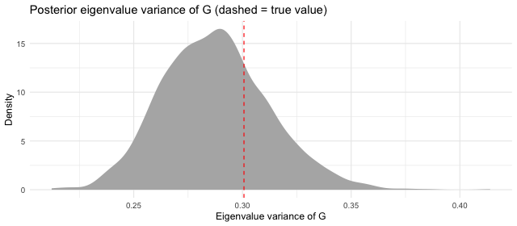

This vignette simulates five correlated traits on a random pedigree
with a known genetic covariance matrix G, fits the
multivariate model with lmm_animal(), and compares the
posterior G, E, P, genetic
correlations, heritabilities and fixed effects with the simulated
truth.
library(stanimal)
library(pedtools) # randomPed(); install with pak::pkg_install("cran/pedtools")
library(patchwork)
library(ggplot2)Simulation
random_covariance(method = "partial") draws a random
covariance matrix (the package port of
evolqg::RandomMatrix(LKJ = FALSE)). The residual covariance
is the identity.
ped <- randomPed(1500, 50, seed = 2)
ped <- data.frame(id = ped$ID, sire = ped$FIDX, dam = ped$MIDX)
A <- makeA(ped)
L_A <- chol(A)
n_traits <- 5
traits <- paste0("trait", seq_len(n_traits))
set.seed(41)
(G <- random_covariance(n_traits, method = "partial", trait_names = traits))
#> trait1 trait2 trait3 trait4 trait5
#> trait1 1.0000000 0.43528119 -0.3527655 0.65838924 -0.5730190
#> trait2 0.4352812 1.00000000 -0.5595610 0.09106039 -0.7158400
#> trait3 -0.3527655 -0.55956098 1.0000000 0.42988339 0.9424567
#> trait4 0.6583892 0.09106039 0.4298834 1.00000000 0.1563740
#> trait5 -0.5730190 -0.71584004 0.9424567 0.15637400 1.0000000
E <- diag(n_traits)
n <- nrow(A)
a <- t(L_A) %*% matrix(rnorm(n * n_traits), n, n_traits) %*% chol(G)
beta <- matrix(c(rep(1, n_traits),
rnorm(n_traits, 0, 1),
rnorm(n_traits, 1, 1)), 3, n_traits, byrow = TRUE,
dimnames = list(c("Intercept", "sex", "Z"), traits))
X <- cbind(Intercept = 1, sex = sample(c(0, 1), n, replace = TRUE),
Z = rnorm(n))
e <- matrix(rnorm(n * n_traits), n, n_traits) %*% chol(E)
Y <- X %*% beta + a + e
colnames(Y) <- traitsFit
fit <- lmm_animal(Y, X, A, lkj_prior = 2,
iter = 3000, warmup = 2000, chains = 4, cores = 4,
refresh = 0, seed = 1)
#> Running MCMC with 4 parallel chains...
#> Chain 4 finished in 90.8 seconds.
#> Chain 2 finished in 96.3 seconds.
#> Chain 1 finished in 99.3 seconds.
#> Chain 3 finished in 110.1 seconds.
#>
#> All 4 chains finished successfully.
#> Mean chain execution time: 99.1 seconds.
#> Total execution time: 110.8 seconds.The fit is a CmdStanMCMC object: summaries and
diagnostics use its methods, and the draws work with
posterior and bayesplot.
fit$summary(c("h2", "corrG"))
#> # A tibble: 30 × 10
#> variable mean median sd mad q5 q95 rhat ess_bulk ess_tail
#> <chr> <dbl> <dbl> <dbl> <dbl> <dbl> <dbl> <dbl> <dbl> <dbl>
#> 1 h2[1] 0.463 0.463 0.0443 0.0451 0.392 0.537 1.00 3203. 2706.
#> 2 h2[2] 0.460 0.460 0.0408 0.0402 0.394 0.529 1.00 3687. 3168.
#> 3 h2[3] 0.458 0.458 0.0421 0.0416 0.390 0.529 1.00 2415. 2477.
#> 4 h2[4] 0.476 0.476 0.0425 0.0427 0.408 0.546 1.00 2870. 2804.
#> 5 h2[5] 0.504 0.504 0.0404 0.0403 0.436 0.570 1.00 2281. 2628.
#> 6 corrG[1,1] 1 1 0 0 1 1 NA NA NA
#> 7 corrG[2,1] 0.456 0.457 0.0757 0.0750 0.329 0.576 1.00 3250. 2982.
#> 8 corrG[3,1] -0.337 -0.340 0.0766 0.0776 -0.460 -0.210 1.00 2147. 2572.
#> 9 corrG[4,1] 0.597 0.598 0.0616 0.0609 0.492 0.694 1.00 2850. 3036.
#> 10 corrG[5,1] -0.543 -0.546 0.0673 0.0677 -0.648 -0.426 1.00 2349. 3212.
#> # ℹ 20 more rows
fit$diagnostic_summary()
#> $num_divergent
#> [1] 0 0 0 0
#>
#> $num_max_treedepth
#> [1] 0 0 0 0
#>
#> $ebfmi
#> [1] 1.030397 1.002717 1.047801 1.004827fit_draws() returns every quantity as an array with the
traits first and the draws last, with named dimensions.
draws <- fit_draws(fit)
draws
#> <fit_draws> 4000 draws, 5 trait(s)
#> traits: trait1, trait2, trait3, trait4, trait5
#> G 5 x 5 x 4000
#> E 5 x 5 x 4000
#> P 5 x 5 x 4000
#> corrG 5 x 5 x 4000
#> corrE 5 x 5 x 4000
#> corrP 5 x 5 x 4000
#> h2 5 x 4000
#> sigma_G 5 x 4000
#> sigma_E 5 x 4000
#> sigma_P 5 x 4000
#> beta 5 x 3 x 4000
#> s_G 5 x 4000Posterior means against the truth
draws_mean() and draws_quantile() give
matrices back. Residual correlations are not a model output;
fit_draws() derives them from the E draws.
round(draws_mean(fit, "G"), 2); round(G, 2)
#> trait1 trait2 trait3 trait4 trait5
#> trait1 0.86 0.41 -0.30 0.53 -0.50
#> trait2 0.41 0.93 -0.48 0.15 -0.65
#> trait3 -0.30 -0.48 0.91 0.40 0.84
#> trait4 0.53 0.15 0.40 0.91 0.14
#> trait5 -0.50 -0.65 0.84 0.14 0.98
#> trait1 trait2 trait3 trait4 trait5
#> trait1 1.00 0.44 -0.35 0.66 -0.57
#> trait2 0.44 1.00 -0.56 0.09 -0.72
#> trait3 -0.35 -0.56 1.00 0.43 0.94
#> trait4 0.66 0.09 0.43 1.00 0.16
#> trait5 -0.57 -0.72 0.94 0.16 1.00
round(draws_mean(fit, "E"), 2)
#> trait1 trait2 trait3 trait4 trait5
#> trait1 1.00 0.06 -0.06 0.04 -0.03
#> trait2 0.06 1.08 -0.07 0.02 -0.05
#> trait3 -0.06 -0.07 1.07 -0.01 0.03
#> trait4 0.04 0.02 -0.01 1.00 0.01
#> trait5 -0.03 -0.05 0.03 0.01 0.96
round(draws_mean(fit, "corrP"), 2); round(cov2cor(G + E), 2)
#> trait1 trait2 trait3 trait4 trait5
#> trait1 1.00 0.24 -0.19 0.30 -0.28
#> trait2 0.24 1.00 -0.27 0.08 -0.35
#> trait3 -0.19 -0.27 1.00 0.20 0.44
#> trait4 0.30 0.08 0.20 1.00 0.08
#> trait5 -0.28 -0.35 0.44 0.08 1.00
#> trait1 trait2 trait3 trait4 trait5
#> trait1 1.00 0.22 -0.18 0.33 -0.29
#> trait2 0.22 1.00 -0.28 0.05 -0.36
#> trait3 -0.18 -0.28 1.00 0.21 0.47
#> trait4 0.33 0.05 0.21 1.00 0.08
#> trait5 -0.29 -0.36 0.47 0.08 1.00
round(draws_quantile(fit, "corrE", probs = c(0.05, 0.95)), 2)
#> , , 5%
#>
#> trait1 trait2 trait3 trait4 trait5
#> trait1 1.00 -0.02 -0.14 -0.04 -0.10
#> trait2 -0.02 1.00 -0.14 -0.06 -0.13
#> trait3 -0.14 -0.14 1.00 -0.09 -0.06
#> trait4 -0.04 -0.06 -0.09 1.00 -0.07
#> trait5 -0.10 -0.13 -0.06 -0.07 1.00
#>
#> , , 95%
#>
#> trait1 trait2 trait3 trait4 trait5
#> trait1 1.00 0.13 0.01 0.12 0.05
#> trait2 0.13 1.00 0.01 0.09 0.03
#> trait3 0.01 0.01 1.00 0.06 0.10
#> trait4 0.12 0.09 0.06 1.00 0.09
#> trait5 0.05 0.03 0.10 0.09 1.00The fixed effects, with rows as traits:
round(draws_mean(fit, "beta"), 2)
#> Intercept sex Z
#> trait1 0.87 0.31 2.17
#> trait2 1.03 -0.29 -0.43
#> trait3 1.05 -1.57 -0.90
#> trait4 0.96 0.74 2.31
#> trait5 1.06 -0.32 -0.22
t(beta)
#> Intercept sex Z
#> trait1 1 0.3019750 2.1913930
#> trait2 1 -0.2768797 -0.4746209
#> trait3 1 -1.5898600 -0.8988280
#> trait4 1 0.7823274 2.3449193
#> trait5 1 -0.2121282 -0.1703294Intervals against the truth
In these plots the filled circle is the posterior mean, the thick and thin segments are the 80% and 99% intervals, and the simulated value is the hollow triangle.
bayesplot::color_scheme_set("blue")
interval_plot <- function(pars, truth) {
bayesplot::mcmc_recover_intervals(
fit$draws(pars), true = stats::setNames(truth, pars),
prob = 0.8, prob_outer = 0.99, point_est = "mean")
}
pairs <- which(lower.tri(diag(n_traits)), arr.ind = TRUE)
interval_plot(sprintf("h2[%d]", seq_len(n_traits)),
diag(G) / (diag(G) + diag(E)))
plot of chunk intervals

plot of chunk intervals
Prior against posterior
Where the prior and the posterior overlap, the data add little information.
plot_prior_posterior(fit, trait_names = traits, ncol = 3)
plot of chunk prior-posterior
Genetic ellipses and correlations
plot_G_ellipses() shows the residuals after the fixed
effects with posterior draws of the G ellipses, and the
genetic correlations.
plot_G_ellipses(fit, Y, n_show = 100, X = X)
plot of chunk ellipses
plot_corr(draws_mean(fit, "corrG"), "Estimated") +
plot_corr(cov2cor(G), "True")
plot of chunk corr
A derived quantity: eigenvalue variance
Any function of G has a posterior: apply it to every
draw. Here, the relative variance of the eigenvalues of G,
a common measure of integration.
eig_var <- apply(draws$G, 3, evolqg::CalcEigenVar)
ggplot(data.frame(value = eig_var), aes(value)) +
geom_density(fill = "grey70", colour = NA) +
geom_vline(xintercept = evolqg::CalcEigenVar(G),
colour = "red", linetype = "dashed") +
labs(x = "Eigenvalue variance of G", y = "Density",
title = "Posterior eigenvalue variance of G (dashed = true value)") +
theme_minimal()
plot of chunk eigenvar